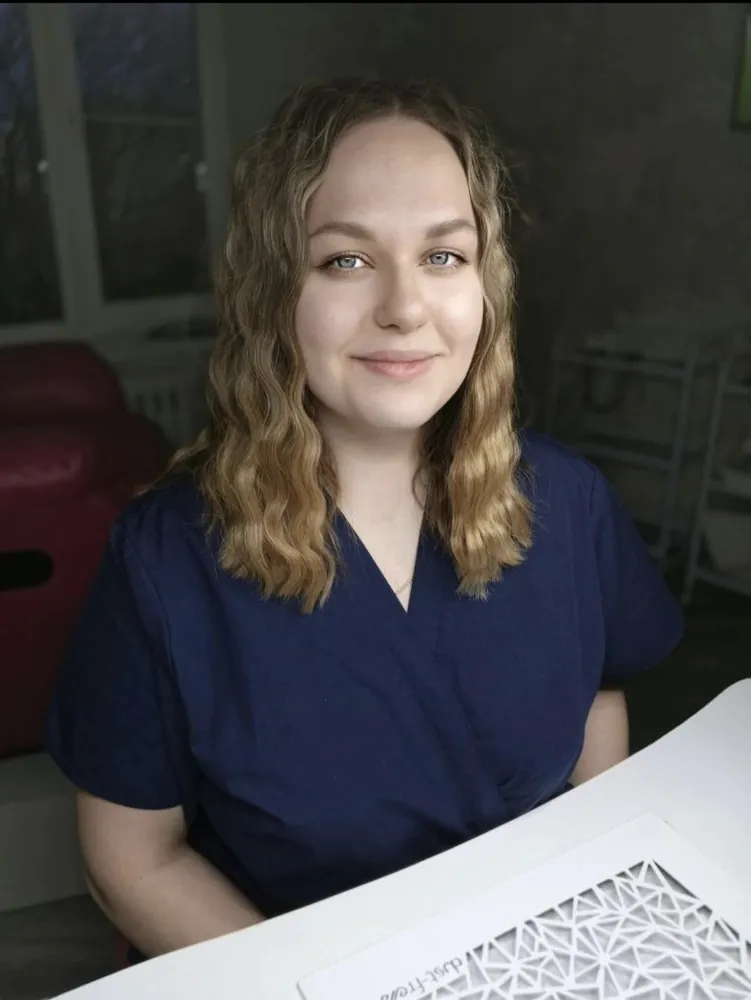

Маникюр и педикюр, в который хочется возвращаться
- Эстетика, стерильность и сервис в кабинете
- Профессиональный уход за руками и ногами
- 5,0 ★ по 33 отзывам ВКонтакте
- 7 лет опыта
- 1 место на чемпионате KANE 2026

Обо мне
Приветствую!
Меня зовут София. Я мастер маникюра и педикюра с опытом работы более 7 лет. Для меня важно, чтобы Вы чувствовали себя комфортно в моём пространстве на процедуре.
Я уделяю особое внимание стерильности (использую ультразвуковую мойку, автоклав, одноразовые материалы) и безопасности. Люблю сочетать эстетику с заботой о здоровье ногтей и кожи.
Всегда подскажу и помогу в выборе домашнего ухода.
7
лет опыта
Комфортная обстановка и индивидуальный подход
Участник и победитель Всероссийского чемпионата по педикюру KANE 2026 в категории «Юниор»


Стерильность и сервис
- Все инструменты проходят обязательную обработку
- Оборудовано специальное помещение


Что замечают клиентки:
Сервис на высшем уровне, все стерильно, чисто
Всегда чисто и рабочее место без единой пыли, это очень важный момент
Полностью оборудовано помещение, чистое, светлое... София всегда в спец. одежде
Все инструменты чистенькие
Мой кабинет


Услуги
Маникюр
- Маникюр с однотонным покрытием (укрепление входит в стоимость)2 000 ₽
- Комбинированный маникюр без покрытия1 100 ₽
- Ремонт ногтя100 ₽
- Снятие моей работыбесплатно
- Снятие чужой работы (с последующим покрытием)200 ₽
- Одно снятие500 ₽
Дизайн
- Френч, растяжка на все пальчики, втирка+500 ₽
Педикюр
- Гигиенический с покрытием3 200 ₽
- Гигиенический без покрытия3 000 ₽
- Подологический без покрытия + зачистка 2-х пальцев3 500 ₽
- Подологический без покрытия + зачистка всех пальцев4 500–5 000 ₽
- Коррекционная система «Лайт» на 1 ноготь с зачисткой (при врастании)3 000 ₽


Подарочный сертификат
Маникюр или педикюр в подарок — на сумму или на конкретную услугу.
В сертификате указывается, кому он предназначен, на какую сумму или услугу и до какого числа действует.
Чтобы заказать сертификат, напишите мне в ВК или позвоните.
Сертификаты об образовании
листайте вбок →


Отзывы
★★★★★
Очень рада, что попала к Софии на педикюр и маникюр... Ответственный мастер, профессиональный, умеет общаться, чувствует настроение клиента... Ненавязчиво может сделать предложение, что лучше для клиента... Полностью оборудовано помещение, чистое, светлое... София всегда в спец. одежде. Я не нахожу никаких недостатков, всё продумано для удобства посетителей... Советую этого мастера, «лучше один раз попробовать, чем 100 раз услышать»
★★★★★
Мастер большой профессионал. Долго не могла найти хорошего мастера. Маникюр и педикюр теперь делаю регулярно только у Сони. Ноготочки держатся отлично! Рекомендую!
★★★★★
Мастера маникюра Софию мне посоветовала старшая дочь. Приятное получилось знакомство!
Великолепное общение! Много оказалось общих тем для разговора.
Высокий профессионализм!
Спасибо, София!
★★★★★
Очень хороший мастер) Работа выполняется аккуратно, быстро, качественно. Ноготки носятся без сколов.
P.s. Ну очень удобное кресло для педикюра
★★★★★
Уже 6 лет делаю маникюр у Софии. Сервис на высшем уровне, все стерильно, чисто. Я в восторге
★★★★★
Была первый раз на педикюре, и явно не последний! Комфортная обстановка, очень все аккуратно.
★★★★★
Была на педикюре, все понравилось, работа выполнена хорошо, спасибо за дополнительные рекомендации)
★★★★★
Искала очень долго профессионала своего дела! Соня является именно таким мастером! Очень внимательная, аккуратная и скурпулезная.
★★★★★
Приятное общение, профессиональная работа.
★★★★★
Прекрасный мастер! Отлично выполняет свою работу, каждый раз ухожу от нее в восторге! Всем советую! :)
★★★★★
Отличный мастер
★★★★★
Отличный мастер, быстро и качественно
★★★★★
Была у Софии на маникюре первый раз, очень аккуратно все сделала. Спасибо большое. Очень уютная и спокойная обстановка. Хороший мастер.
★★★★★
Была на маникюре у Софии в первый раз. Мне очень понравилось. Прекрасное общение, уютная обстановка. Маникюр мне понравился! Спасибо!!!
★★★★★
Лучший мастер маникюра
Все делает качественно, ногти в носке держатся отлично
Рекомендую 100%
★★★★★
Этот мастер с большой буквы. Профессионал своего дела, всегда все на высшем уровне!!! Материалы подобраны качественные, всегда чисто и рабочее место без единой пыли, это очень важный момент. Работы выполняет с душой и так как именно просит клиент!!! Рекомендую этого замечательного мастера однозначно и вы не пожалеете ни на секунду
★★★★★
Все было выполнено качественно и красиво
★★★★★
Очень довольна мастером и работой. София работает аккуратно, качественно, учитывает все пожелания. Рекомендую!
★★★★★
Молодец, всё аккуратно и красиво. Мастер своего дела
★★★★★
Великолепное обслуживание, качественная работа, мне всё очень нравится!
★★★★★
Лучший мастер )
★★★★★
Замечательная работа мастера, аккуратные ногти, долго держится покрытие, большое спасибо,
Рекомендую, оценка 5
★★★★★
Отличный маникюр и педикюр) Качественно и быстро)
★★★★★
Все всегда на высшем уровне — атмосфера, общение, качество работы
★★★★★
Мне всё нравится: чисто, быстро и очень качественно! Хожу уже несколько лет и всегда довольна результатом)
★★★★★
Самый лучший мастер, хожу уже четыре года
★★★★★
Мне очень нравится мастер, ее профессионализм, стойкость и носка работ, атмосфера на процедуре)) Очень нравится, как работает мастер))
Мастер приятная в общении, все инструменты чистенькие))
Весьма рекомендую))
★★★★★
Была первый раз, сделали и педикюр и маникюр, быстро, качественно, деликатно, бережно
Приятная и легкая обстановка, София мастер своего дела
Частые вопросы
01Как вы обрабатываете инструменты?
Инструменты проходят несколько этапов: дезинфекция, предстерилизационная очистка, стерилизация (автоклав), а затем хранятся в запечатанных крафт-пакетах с подписанной датой. Вы имеете право попросить показать зону стерилизации.
02Что не рекомендуется делать до/после маникюра?
До маникюра не рекомендуется использовать любые увлажняющие кремы, масла, делать себе маникюр перед маникюром, так как это не способствует оказанию качественной услуги.
Не стоит отрывать покрытие, чтобы помочь мастеру.
03В чём различие между гелем и гель-лаком?
Гель-лак — это более мягкий материал для ногтей. С гель-лаком нельзя достроить, отремонтировать и качественно доработать архитектуру ногтей.
Гель — это более прочный материал, он имеет более сложную схему, но результат сохраняется дольше и ногти имеют правильно выстроенную архитектуру. С гелем можно быть уверенной, что поломки и трещины не страшны.
04Почему ногти печёт в УФ-лампе?
При помещении рук в лампу проходит процесс полимеризации материала и создаётся тепловой эффект. Насколько он сильный, зависит от материалов, от их количества на ногтях и от мощности лампы.
05Вреден ли гель-лак для ногтей? Правда ли, что ноготь не «дышит» из-за гель-лака?
Ноготь в принципе не умеет дышать, это заблуждение. Если ваши ногти имеют здоровую структуру и вы не испытываете дискомфорт при носке гель-лака, то в перерыве нет необходимости.
Но если всё-таки хочется сделать перерыв в покрытии по здоровью или желанию, то необходимо дождаться, пока отрастёт ноготь. Это занимает примерно 4–6 месяцев.
06Из чего складывается стоимость маникюра и педикюра? Почему она постоянно растёт?
В стоимость маникюра и педикюра включены вложенные средства в оборудование, материалы и повышение квалификации. Труд мастера требует постоянного роста и развития, поэтому качество и здоровье не могут стоить дёшево.
Также цены на расходные материалы и цвета растут, как и на любые другие товары.
07На ногах постоянно возникают натоптыши, как от них избавиться?
Стоит обратить внимание на обувь: правильно ли она подобрана. Может быть, ей необходим правильный подъём или она мала.
Всё решает очная консультация. Также важен домашний уход.
08Педикюр — это сезонная процедура?
Нет, педикюр, так же как и маникюр, необходимо делать регулярно. Подразумевается именно обработка, без покрытия.
Это профилактика кожных заболеваний, трещин, натоптышей, врастаний. А также приятный бонус в виде лёгкости и большей уверенности.
09Почему иногда после педикюра пятки быстро «зарастают»?
Основная причина — в домашнем уходе. Мастер в своём кабинете делает 50% работы. Остальные 50% целиком и полностью зависят от клиента, от ежедневного ухода.
Если Вы не нашли ответа на интересующий Вас вопрос, то пишите в личные сообщения. Я с удовольствием отвечу на все вопросы.
Задать вопрос в ВККонтакты для записи
- ВКонтакте
- vk.ru/sofia_nailz
- Телефон
- +7 999 238-19-92
- Где
- г. Волосово. Точный адрес сообщу при записи
- Группа с работами
- vk.ru/club.beauty.volosovo